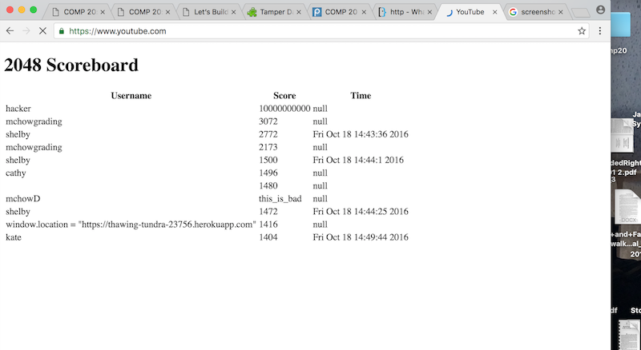

This project was commissioned by Professor Ming Chow on behalf of Tufts University in order to investigate security vulnerabilities in Shelby Cross’ web application “2048 Game Center.” The product uses a modified version of Gabriele Cirulli's open source game, 2048. The modifications to the game collect a username from the user and send that information, along with the user’s score, and a grid of the game to a web server which stores the information in a database collection using MongoDB. The server displays the information from the database in an index page with a list of all the users and their scores and times, sorted by highest to lowest score.
My methodology began with black box testing Shelby’s application without viewing her source code. Then I read her code and performed more tests using curl and direct user input. Finally, I used Firefox’s Tamper Data tool to modify the application’s HTTP request headers.
I found Shelby’s application to have multiple security and privacy issues. I was able to hack the application to make bogus scores and user information appear on the index page and make the page automatically redirect to another website. If there had been private information stored in the database it would be possible to access it. The potential privacy issues with Shelby’s application do not seem as pressing as it is a trivial game, but if it the user was attached to an account containing say, credit card information or a billing address, this would potentially be a huge security issue.

Issue: Cross Site Scripting
The issue was found in the post route ‘./submit.json’ in the index.js file of the heroku app. The route does not check that the input being sent to the server does not contain special characters. This allows anyone to send potentially malicious script, as I did, to Shelby’s app. For example I was able to make the page automatically redirect to youtube.com by submitting script in the username form to change the window location, which you can see happening in the above screenshot if you look at the browser url bar. I could also have put videos, images, into the site, or functions that could do more nefarious things to her site. The severity of this issue is very high. Just the fact that I was able to make her index page redirect almost immediately renders the app almost completely nonfunctional, as you can only view the page for a tiny bit of time before it redirects.
I was able to find this issue before I even looked at Shelby’s code through “black box testing” by playing her game and sending script where it asked for a username. Then I checked her code and confirmed that she indeed did not check for special characters.
The resolution to this problem would be to simply ensure that no special characters are permitted anywhere you collect input from the user.
In the post route ‘submit.json’, after the line:
var username = request.body.username;
Adding the following line would prevent XSS:
username = username.replace(/[^\w\s]/gi, '');
Issue: User Validation
In addition to allowing the user to input their name, a more crafty user may realize that they can modify any of the fields in a new entry to the database by using a tool called curl that can make a post request directly to the server through the terminal window. Currently, Shelby’s application has no check to make sure the person entering the data really is who they say they are. This problem is also found in the post route “/submit.json.” Because of the lack of validation anyone can make a new entry in the database by running “curl --data “param1=value1andparam2=value2” [the_domain]/submit.json” This is what allowed me to, under the pseudonym “hacker”, give myself a score of 10,000,000,000 and win the game, which you can also see in the screenshot above.
This issue is also severe because allowing anyone to make modifications to your database completely ruins the validity of your data. Who will want to take part in a Game Center if they know they can never beat the person who gives themselves a winning score? A more serious concern of course would be if this data were something more important, like votes for instance. Bogus data sent from curl could rig any election that doesn’t check for user validation.
The solution to this issue is to ensure there is some form of user validation before entering a new dataset into the database. This means authenticating that they are a real user--in this case someone who has played the game--and only then authorizing the insertion into the database collection. Basic checks for user validation include valid session details, user details and privileges, and request origin to check if the request is coming from the same computer.
Issue: Modifying HTTP Request Headers
Another problem with Shelby’s code is that it allows for the modification of the HTTP Request Header via a proxy using tools such as Mozilla Tamper Data and Burp Suite. By modifying the request header, you can send almost any kind of data to the server. This is problematic for the same reasons as the above issues. Who would trust a game that can be so easily cheated on?
I would say this issue is also severe because it would be possible for someone to put bogus data into the web app or modify the request header in such a way that could cause the program to crash.
This issue can be found in all three server side routes, as they all have request headers.
In order to prevent this problem from happening I reiterate the importance of validating any data that is sent to the server, as it could be coming from a proxy site with malicious intent.
I hope that this report has impressed upon you the importance of web security, particularly when developing any server-side applications that take input from the user. I have demonstrated multiple ways in which this input could be taken advantage of and used against the application. I recommend that this application is amended with the suggestions I have made to prevent such attacks.